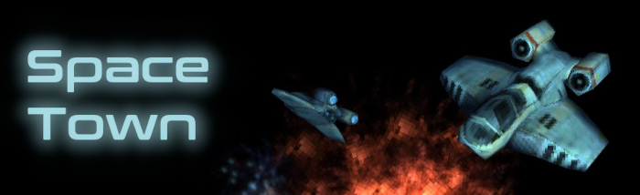
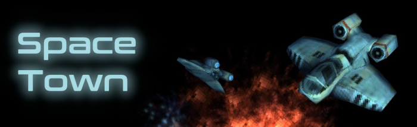

미세한 중력의 변화를 모조리 기록하고, 분석할 수 있는 기계가 있다면 새로운 정보혁명이 시작될 것이다. 왜? 그야 당연히 이 세상에 있는 모든 물체들이 어디로, 어떤 식으로 움직였는지를 기록할 수 있게 될 것이니 말이다. 물론 그럴려면 아주 먼 거리에 위치한 사물들의 아주 미세한 움직임까지도 감지할 수 있는 “장거리 중력장 감지기”가 필요하고, 그 장치에 달린 센서들은 아주 미세한 힘의 변화에도 반응할 수 있어야 한다. 예컨대 수정구슬같이 생긴 거대한 구체의 인공위성이 지구 주변의 괘도에 떠 있다고 해보자. 그 인공위성이 하는 일은 현재 자신에게 가해지는 모든 중력의 힘들을 감지한 다음, 그 힘들의 근원을 하나하나 다 추적해내는 것이다. 이 인공위성은 성능이 너무나도 좋은 나머지, 지구상에 존재하는 모래알 하나하나가 어떤 위치에서 어떤 방향의 힘으로 자신에게 중력을 가하고 있는지도 알고 있다. 물론 인간을 포함한 동식물들, 사물들, 공기분자들, 자연적인 지형들, 심지어는 구름들의 정확한 위치도 완벽하게 알고 있다. 왜냐하면 이 모든 사물들이 인공위성에게 중력을 가하고 있기 때문이다. 중력장 감지 인공위성은 자신에게 중력을 가하는 모든 물체의 상대적인 위치, 속력, 가속력을 언제든지 알아내어 기록할 수 있다. 한마디로 이 무시무시한 기계는 지구상은 물론 주변 우주에서 일어나는 모든 일들 (설사 그것이 화학작용같은 나노미터 단위의 사건이라 할지라도) 을 다 알고 있는 것이다.
여기서 혹자는 의문을 가질 것이다. 어떻게 하나의 구체 덩어리가 모든 중력의 총 합 대신에, 수없이 많은 하나하나의 미세한 중력들을 어떻게 일일히 감지할 수 있단 말인가? 물론 이는 맞는 말이다. 그러나 인공위성에는 중력장을 포착하는 센서가 하나만 있는 것이 아니다. 인공위성의 표면에는 거의 10의 27제곱개에 육박하는 분자단위의 중력감지 센서들이 부착되어 있고, 이들은 실시간으로 제각기 다른 강도와 방향을 가진 중력의 힘들을 포착해 (왜냐하면 센서들은 위치가 아주 조금씩은 다르니까) 중앙 데이터베이스에 전송한다. 그러면 중앙 데이터베이스는 구체의 표면상의 위치에 따른 중력의 힘들과 방향들의 변화를 정밀하게 분석해, 미세한 위치 차이에 따른 미세한 중력 차이를 바탕으로 총 중력이 우주상에 어떤 패턴으로 퍼져 있는지를 추적해낸다. 다른 말로 이 인공위성은 “중력의 지도”를 찍을 수 있는 카메라인 셈이다.
물론 이 성능 좋은 인공위성은 지구상의 중력의 지도를 찍을 수도 있다. 지표면에 돌아다니고 있는 모든 사물들은 다 하나같이 인공위성에게 중력을 가하고 있기 때문에, 중력의 지도를 그리면 지구 위에서 돌아다니는 모든 사물들의 행방을 찾아낼 수 있는 것이다. 모든 미세한 중력들은 각각의 사물들의 위치를 알려주는 변수로 작용한다. 그리고 이런 식으로 수집된 정보들은 정부 비밀기관들에게 아주 유용한 정보로 이용된다. 사회학자, 생태학자, 통계학자들에게도 마찬가지다. 인공위성에 무선통신기능을 추가한다면 새로운 통신기술의 혁명도 가능하다. 지구상의 누군가가 하늘을 향해 손을 흔든하고 가정해 보자. 그가 손을 흔드는 행위는 중력장에 아주 미세한 변화를 가져오는데, 인공위성은 워낙에 예민하기 때문에 그 미세한 중력의 변화도 포착한다. 그러면 인공위성은 그 중력변화의 정확한 방향과 속력을 계산해 내어, 누군가가 손을 흔드는 영상을 재현해낸다. 그런 다음에는 그렇게 제작된 영상을 정확한 위치/시간정보와 함께 인터넷 게시판에 올리면, 그 게시물을 조회해 본 사람들은 정확히 그 날 몇시 몇분 몇초에 어디에서 누군가가 하늘을 향해 손을 흔들었다는 사실을 알게 된다. 물론 손을 흔든 사람의 사생활이 침해되지는 않는다. 인공위성은 그저 누군가가 손을 흔들었다는 사실만 포착했을 뿐, 정확히 “누가” 손을 흔들었는지까지 알아낼 정도로 영리하지는 않기 때문이다. 하지만 여전히 이 중력감지 인공위성은 지구상의 모든 장소에서 일어나는 모든 “행위”들을 죄다 포착해 인터넷에 올릴 수 있기 때문에, 누군가가 “나는 어제 6시 30분쯤에 140번지의 건물 옥상에 있었어”라고 말하면 사람들은 인터넷을 조회함으로써 그 사람이 정확히 그때 그곳에서 무얼 했는지 알 수 있을 것이다. 다만 그렇게 된다면 그때부터 사람들은 자신의 행방을 남에게 알려주는 것을 기피할 것이다.
이제 밤하늘을 본다는 것은 새로운 의미를 가질 수 있겠다. 지구상에서 일어나는 모든 일들을 감지할 수 있는 전시안을 가진 달이 하늘에 떡하니 떠 있으니, 이는 그야말로 신적인 존재와의 직접적인 대면이라 할 만하다. 우리가 뭘 하는지 알고 있고, 과거에 우리가 뭘 했는지도 일일히 알고 있는 전지전능한 초월적 존재 – 이제 그러한 존재에 대한 믿음은 단순한 철학적 믿음이 아닌 과학적 사실이 되었다.